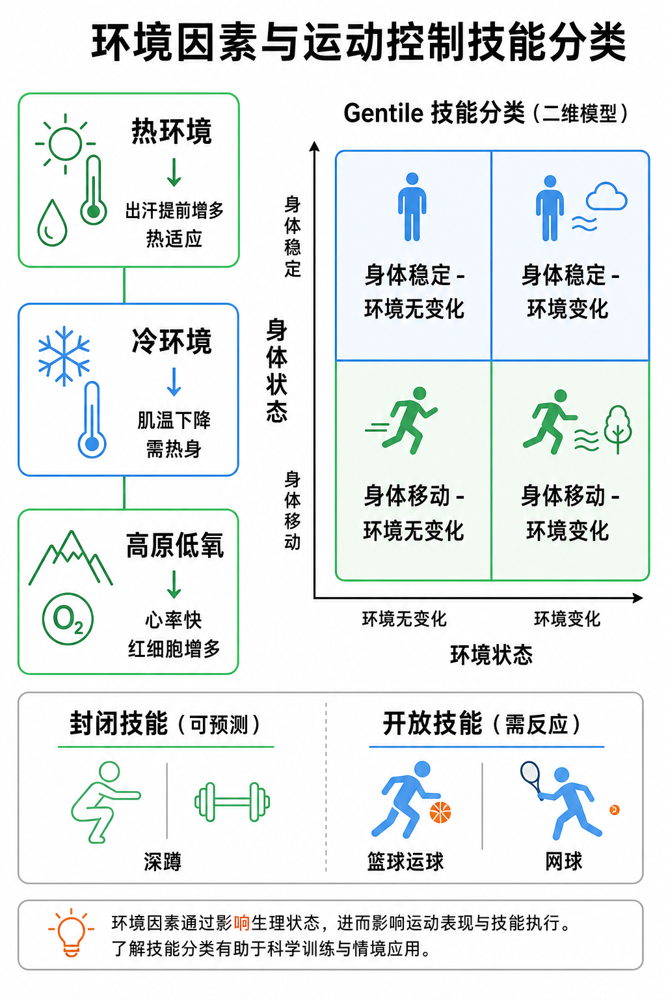

Day 38：环境因素与运动控制技能分类
把外界条件对身体的影响，和动作在什么情境中完成，拆开判断，训练设计才不会混。
一口话总结
热、冷、高原先改变身体的可承受负荷；技能分类再看身体是否移动、环境条件是否变化，以及是否要操控物体。训练必须同时匹配人、环境和任务。

核心要点
- 热环境热适应的目标是更有效地散热，而不是在高温里硬扛。生理变化
高温训练时，身体既要把血液送往工作肌肉，又要把更多血液送往皮肤散热，因此心率和心血管负担会上升。出汗会带走热量，但大量出汗也会增加脱水风险。
适应表现经过循序渐进的热暴露，通常会出现更早开始出汗、同一负荷下心率和主观用力感下降、体温更容易受控等变化。出汗量多本身不是“已经适应”的充分证据。
训练决策优先调整时段、强度、时长和补液机会，再观察心率、主观疲劳和异常症状。初次暴露、睡眠不足、刚生病或有心血管风险的人，应采用更保守的负荷。
- 冷环境低肌温会拖慢发力与协调，动态热身是进入主训练的前提。生理变化
肌肉温度下降会影响神经传导速度、肌肉收缩速度和组织黏弹性，动作更容易显得僵硬，完成同样的爆发或精细协调任务会更困难。
训练决策先通过低强度有氧、关节活动和动作专项的渐进组把体温带上来，再安排冲刺、跳跃、举重等高速度或高功率内容。停歇时及时保暖，避免热身成果在组间流失。
注意边界寒冷、湿衣和风会共同加速散热。出现持续颤抖、麻木、动作控制明显变差时，不应把它当作“意志力不足”，而应降低暴露并恢复保暖。
- 高原低氧先区分急性反应和长期适应，训练负荷要给适应过程留空间。急性反应
海拔升高后，吸入空气的氧分压下降。相同配速或功率下，心率、呼吸频率和主观用力感常会上升，恢复时间也可能变长；这不等同于耐力突然变差。
适应与安排初到高原应先降低强度和总量，用心率、主观用力和睡眠恢复来调节进度。长期暴露可出现红细胞相关适应，但速度存在个体差异，不能靠几次训练快速获得。
安全判断若出现进行性头痛、明显恶心、静息气短、步态不稳或意识改变，应停止训练并寻求医疗评估；严重或加重时尽快下撤，比继续“适应”更重要。
- Gentile 技能分类不是只有“稳/动 × 变/不变”，而是用环境条件与动作功能共同组织成 16 类技能。环境条件
先看调节条件是静止还是在运动，例如目标、地面或对手是否移动；再看每次尝试之间是否变化，例如距离、速度、方向或情境是否相同。这两个维度决定外界信息的稳定性与可预测性。
动作功能再看身体是保持稳定还是发生位移，并判断是否需要操控物体。四个二分维度组合为 16 类，而不是只用四种组合概括所有技能。
如何使用教学时可从“环境固定、条件重复、身体稳定、不操控物体”的简单情境起步，再逐步加入移动目标、条件变化、身体位移或器械操控。一次只提高一个维度，更容易定位学员卡在哪里。
- 封闭技能与开放技能区别在于环境线索是否稳定、能否预测，二者之间存在连续谱。封闭技能
深蹲、固定路线的技术动作或在稳定场地完成的直线冲刺，外界变化较少，动作程序可以在相近条件下重复。练习重点通常是动作质量、节奏和力量输出。
开放技能篮球运球、网球接发球或躲避来球时，目标、对手和空间不断变化。学员需要感知线索、选择动作并及时修正，单独重复一个固定动作并不足以覆盖比赛需要。
实践提醒技能不是绝对标签：同样的传球，在无干扰练习中更封闭，加入移动防守和时间压力后就更开放。训练设计应与目标场景的不可预测性相匹配。
- 训练设计顺序先确认风险和情境，再决定动作进阶，而不是只看动作难不难。第一步：人和环境
评估温度、湿度、海拔、场地、装备与学员当天的恢复状态。环境已经改变可承受负荷时，先调总量、强度、休息和补液，而非强行执行原计划。
第二步：任务约束明确动作目标、身体是否位移、外界条件是否变化，以及是否需要操控物体。力量初学者先在稳定条件下建立动作质量；专项训练再逐步增加速度、反应和决策要求。
第三步：只改一个变量每次进阶优先改变一个关键条件，例如先增加移动距离，再加入方向变化，最后引入对手或时间压力。这样既能维持安全，也能判断表现变化到底由哪一项要求造成。
常见误区
“出汗多 = 热适应完成” 不对。真正的热适应还包括心率、主观感受和体温控制的变化。
“高原心率快 = 不能练” 也不对。多数情况是需要减量、适应和阶段性推进，不是直接停掉。
“封闭技能就是简单，开放技能就是高级” 也不对。它们只是环境可预测性不同。
翻转卡复习
实操关联
- 户外训练：热天先调低强度，冷天先拉长热身，高原先做适应，再谈进阶。
- 技能分类：做计划时先判断动作是在稳态还是变动环境里完成。
- 教练口令：闭链稳定动作先练质量，开放技能先练反应和决策。
- 客户沟通：把“今天环境怎么变”讲清楚，客户更容易理解为什么训练要改。